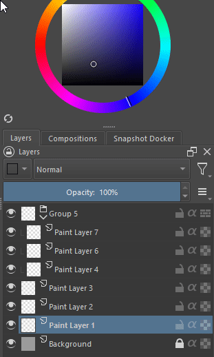

Adds a box on the layers docker to choose color labels.
Once the plugin is installed you can just choose the color label and click to apply to selected layers.
Now one thing that people will notice:
the color box will always stay in the last chosen color, even if you select a layer that already has a color label, the box will not be updated.
Why doesnt the box update? I just couldnt find a way to check if the current layer was changed, the signal of layer changed doesnt seem to be avaliable from the krita api so i can't really do much.